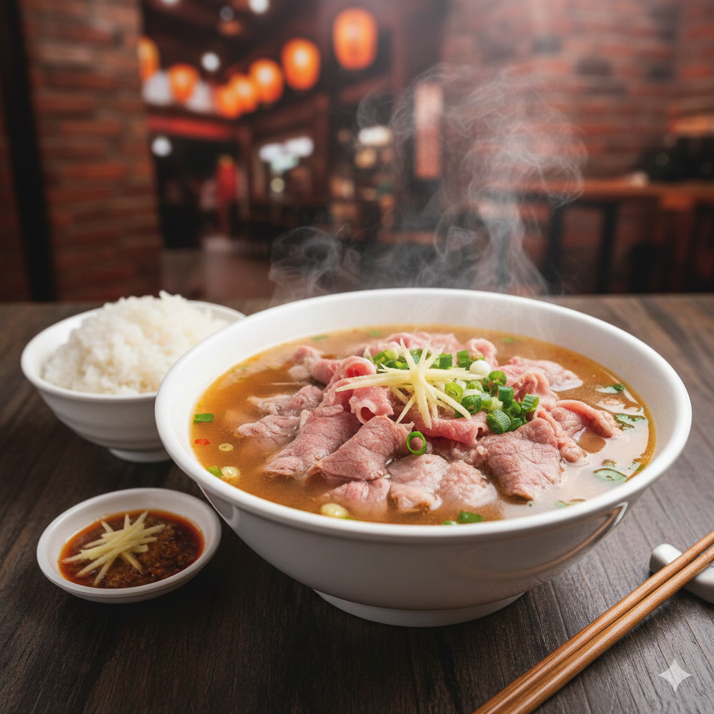
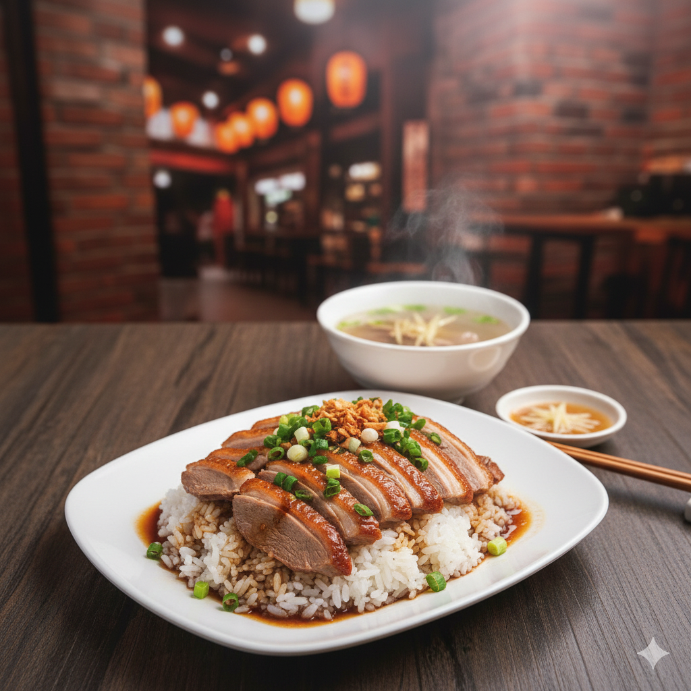
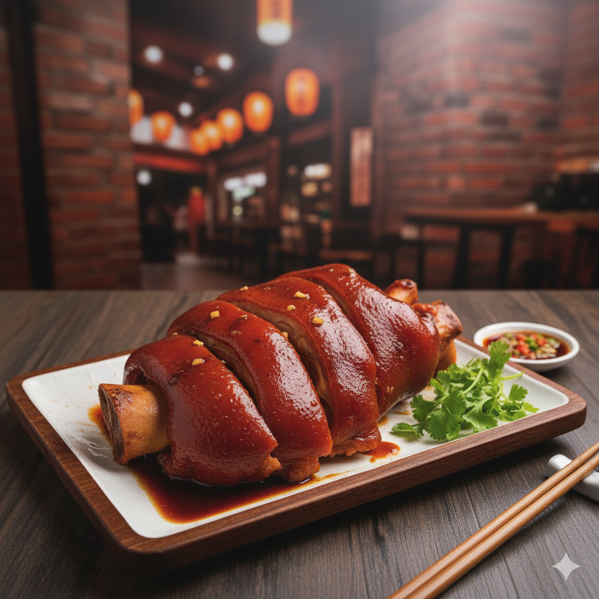
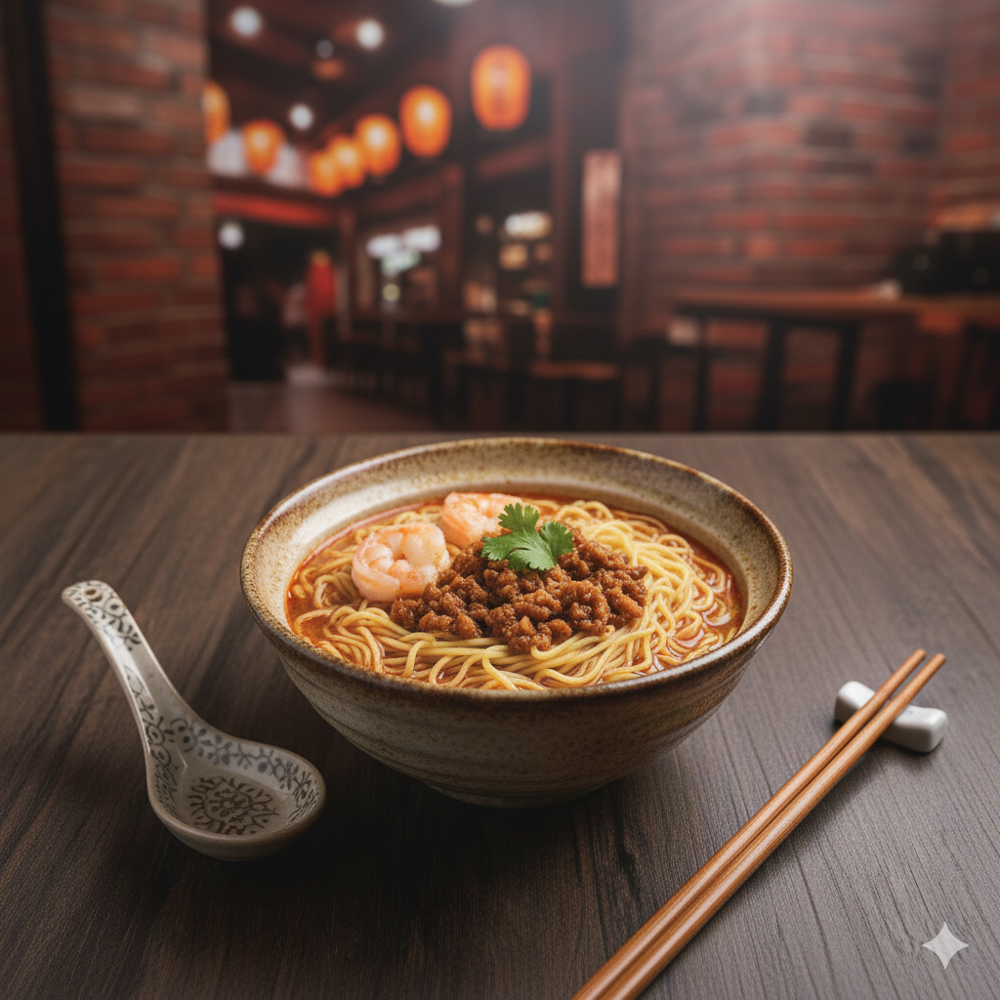
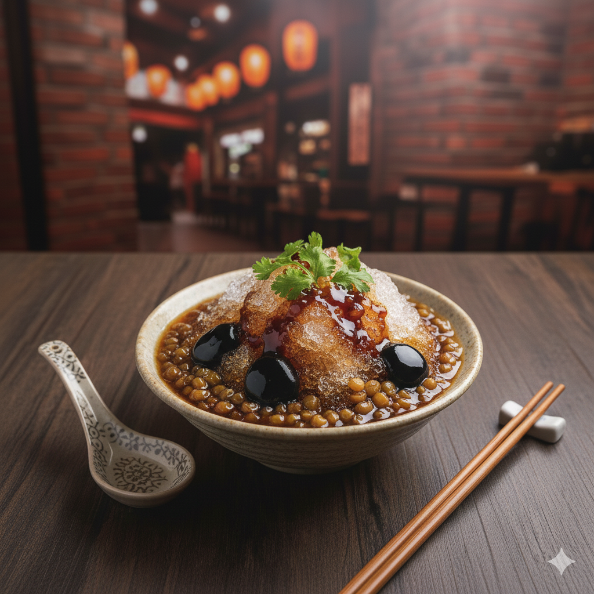

南台灣美食之旅：高屏南五道必吃在地料理
這是一趟讓人垂涎三尺的南台灣美食之旅！高雄、屏東、台南（簡稱「高屏南」）這三個地區不僅熱情如火，美食文化更是底蘊深厚。這裡的料理特色通常帶有「鮮、甜、濃郁」的風味，強調食材的新鮮度與獨特的在地調味。以下為您精選五道最具代表性的在地美食料理，帶您用味蕾遊越南台灣：
1. 台南：清燙牛肉湯 (Tainan Beef Soup)
台南人的早晨，往往是從一碗熱騰騰的牛肉湯開始的。這不僅是早餐，更是一種對「鮮度」的極致追求。
- 特色介紹： 台南牛肉湯的靈魂在於使用當天現宰的「溫體牛」，未經冷藏冷凍，肉質保持最鮮嫩的狀態。做法極其簡單直接：將生牛肉片放入碗中，再沖入滾燙的高湯。牛肉瞬間被燙至粉嫩的五分熟，鎖住肉汁。湯頭通常以牛骨、蔬果熬製，喝起來清甜回甘。
- 在地吃法： 第一口先喝原味湯頭，接著將半熟的牛肉片沾上台南特有的偏甜醬油膏與大量薑絲一同入口，鮮美無比。

2. 高雄：鴨肉飯 (Kaohsiung Duck Meat Rice)
來到高雄，絕對不能錯過一碗香氣四溢的鴨肉飯。這是高雄人從小吃到大的庶民美食，簡單卻充滿力量。
- 特色介紹： 高雄的鴨肉飯通常選用肉質緊實多汁的土番鴨。將鴨肉煮熟後切片或切丁鋪在白飯上，關鍵步驟是淋上店家獨門提煉的「鴨油蔥酥醬汁」。這匙醬汁鹹香濃郁，讓整碗飯瞬間昇華，每一粒米飯都包裹著鴨油的香氣，讓人忍不住一口接一口。
- 在地吃法： 點一碗鴨肉飯，通常還要配上一碗用煮鴨高湯做成的鴨心湯或下水湯，再來一份燙青菜，就是完美的高雄在地套餐。

3. 屏東：萬巒豬腳 (Wanluan Pork Knuckles)
說到屏東美食，萬巒豬腳絕對是享譽全台的頭號代表。走進萬巒鄉的豬腳街，滿街的滷香撲鼻而來。
- 特色介紹： 萬巒豬腳的特色在於其獨特的滷製工法與口感。選用豬前蹄部位，經過多種中藥材長時間滷製後，還需要經過一道「冷卻」的工序。這使得豬腳皮吃起來特別Q彈、脆口，完全沒有油膩感，肉質則紮實有嚼勁。
- 在地吃法： 萬巒豬腳的另一個靈魂是「蒜蓉沾醬」。店家特製的醬油膏加入大量蒜泥，鹹甜帶嗆辣，蘸著切片的冷豬腳吃，風味層次瞬間拉滿。

4. 台南：擔仔麵 (Tainan Danzai Noodles)
擔仔麵是台南最經典的「小吃」代表，它起源於百年前漁民在漁獲淡季（小月）時挑擔叫賣麵食維持生計，因此份量精緻，是「吃巧不吃飽」的典範。
- 特色介紹： 一碗看似簡單的擔仔麵，工序卻非常講究。湯頭多以蝦頭熬煮，鮮味十足。麵條燙好後，淋上靈魂主角——經過長時間慢火燉煮、香氣濃郁的「肉燥」，最後擺上一尾鮮蝦、少許豆芽菜和香菜，並淋上一點烏醋提味。
- 在地吃法： 吃擔仔麵前要先將肉燥與麵條拌勻，讓每一口都吸附湯汁與滷肉香。因為份量不大，通常會當作點心，或者再多點幾道小菜搭配。

5. 屏東（車城/恆春）：綠豆蒜 (Mung Bean Garlic Dessert)
在炎熱的國境之南屏東，來一碗冰涼甜蜜的綠豆蒜，是消暑的最佳選擇。名字裡有「蒜」，但它其實是一道道地的甜品。
- 特色介紹： 「綠豆蒜」並不是加入了大蒜，而是因為綠豆剝殼後，其米黃色的外觀看起來很像剁碎的蒜末而得名。將剝殼綠豆與糖水熬煮至濃稠勾芡狀，口感滑順綿密，帶有濃濃的綠豆香氣。
- 在地吃法： 綠豆蒜冷熱皆宜。冬天吃熱的暖胃；夏天則一定要加入大量碎冰（剉冰），並常搭配粉條、粉圓、綠豆等配料，冰火交融的口感非常過癮。
